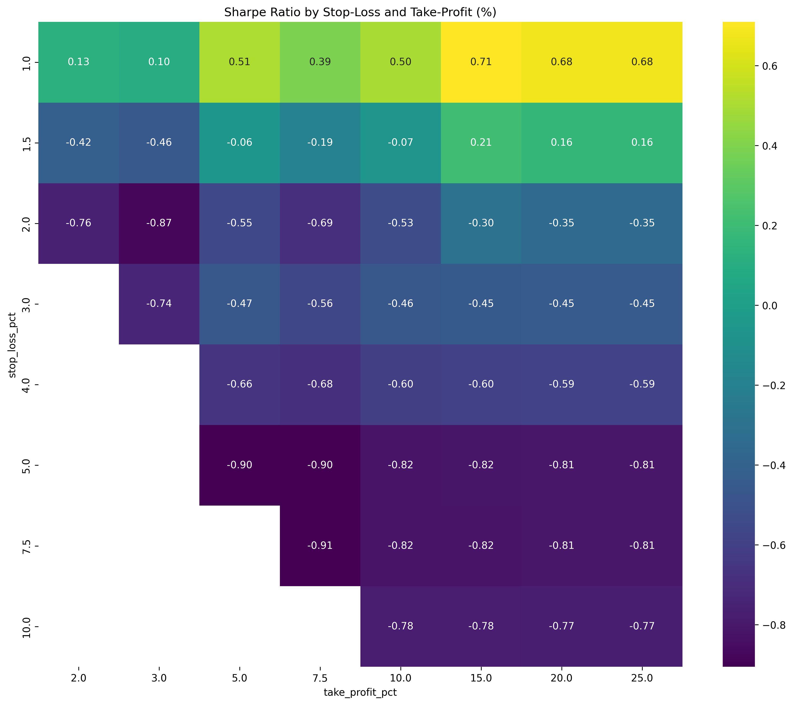
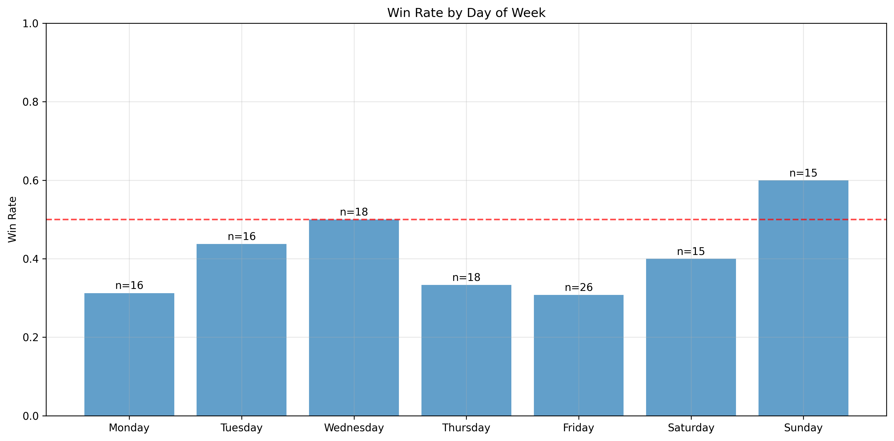
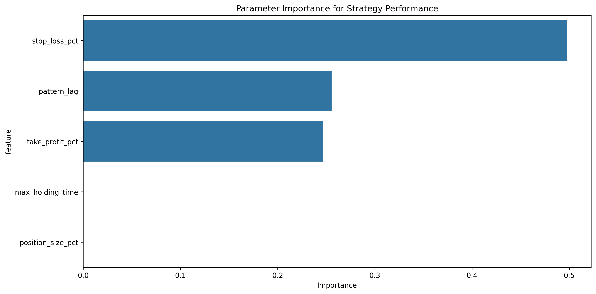

StrategyOptimizer Results
Machine learning optimized trading parameters based on BTC-Altcoin pattern analysis.
Strategy Performance
Win Rate
40.3%
Profit Factor
1.44
Sharpe Ratio
2.20
Total Return
2.94%
Drawdown
1.17%
Total Trades
124
Optimal Strategy Parameters
Pattern
rsi_overbought
Lag (min)
5
Stop Loss
1.0%
Take Profit
5.0%
Position Size
10.0%
Strategy Performance Charts
Equity Curve

Stop-Loss/Take-Profit Optimization
Performance by Day
Parameter Importance
Strategy Implementation Guide
This strategy monitors Bitcoin for the rsi_overbought pattern and trades the altcoin accordingly with the following approach:
- Monitor Bitcoin for the rsi_overbought pattern
- When pattern is detected, wait 5 minutes
- Enter a long position with 10.0% of capital
- Set stop loss at 1.0% below entry
- Set take profit at 5.0% above entry
- Exit after 240 minutes if neither target is reached
Complete Strategy Summary
========== OPTIMAL STRATEGY SUMMARY ========== STRATEGY PARAMETERS: -
Pattern to monitor: rsi_overbought - Signal lag (minutes): 5 - Entry
threshold: 0.000100 - Stop Loss: 1.00% - Take Profit: 5.00% - Max
holding time: 240 minutes - Position size: 10% of capital Pattern
"rsi_overbought" details: - Number of instances: 1528 - Correlation:
-0.0133 - Average return: -0.000102 - Win rate: 44.63% PERFORMANCE
METRICS: - Total trades: 124 - Win rate: 40.32% - Profit factor: 1.44
- Average win: 0.0190 - Average loss: -0.0089 - Sharpe ratio: 2.20 -
Total return: 2.94% - Maximum drawdown: 1.17% STRATEGY IMPLEMENTATION:
1. Monitor Bitcoin for the "rsi_overbought" pattern 2. When pattern is
detected, wait 5 minutes 3. Enter DOGE long position with 10% of
capital 4. Set stop-loss at 1.00% below entry price 5. Set take-profit
at 5.00% above entry price 6. Exit the position if max holding time of
240 minutes is reached